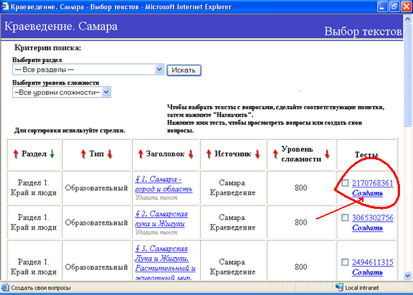
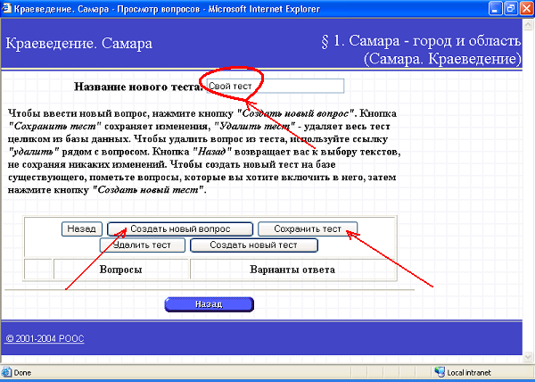
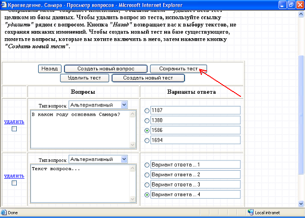
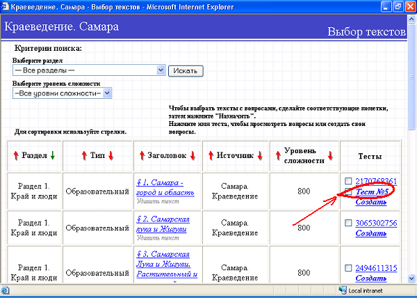

В каждый из наполняемых учебных курсов вы можете добавить свои тесты. Для того, чтобы это сделать пользователь с ролью учителя должен преподавать какой-либо предмет в каком-либо классе. Такой пользователь должен на странице Учебные курсы выбрать учебный курс, в котором нужно создать новый тест, нажать на кнопку
Примечание: Если кнопки Добавить нет, а есть только кнопка Вернуться, то это означает, что данный пользователь не преподает в выбранном классе данный предмет.
Создание нового теста
Процесс создания нового теста, будет показан на примере существующего в системе "Сетевой Город", по умолчанию, курса Самара. Краеведение.
После нажатия кнопки Добавить, открывается список текстов данного учебного курса в виде таблицы. В правой части этой таблицы есть столбец Тесты, в котором, изначально для каждого текста есть две ссылки: одна из них показывает уже существующий, по умолчанию, тест к данному тексту (с помеченными правильными ответами), а вторая - Создать - ведет к странице создания нового теста. Для каждого из текстов вы можете создать неограниченное количество тестов.

На открывшейся странице введите название нового теста, и затем нажмите кнопку Создать новый вопрос:

Типы вопросов
Вопросы в тестах могут быть 3 видов: альтернативные, последовательные и табличные.
В альтернативных вопросах вам нужно ввести текст вопроса, четыре варианта ответа и пометить правильный вариант.
Последовательный и табличный вопросы, по сути своей, схожи. Но, если последовательный вопрос преполагает наличие набора(последовательности) из четырех текстовых ячеек, в которых не хватает одного элемента (ячейки), то табличный, кроме четырех элементов, содержит еще и некое дополнительное текстовое наполнение.
Для того, чтобы сохранить введенный вопрос и перейти к вводу следующего, нажмите кнопку Создать новый вопрос.
Если все вопросы уже введены и тест готов, то нажмите кнопку Сохранить тест:

После нажатия кнопки Сохранить тест, созданный вами новый тест появится в таблице с текстами рядом с ранее существовашим тестом(тестами).

Использование теста
Теперь этот тест можно будет задать учащимся для прохождения (кнопка Назначить внизу экрана), и результаты его будут автоматически отображаться в Журнале результатов по учебному курсу.
Удаление теста
Тест можно удалить, поставив галочку слева от него и нажав кнопку Удалить тесты внизу экрана.